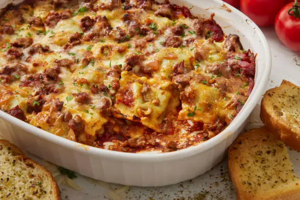

lasagna recipe

quick and easy lasagna recipe with minimal prep and no-boil noodles—ready in under 1 hour!
ingredients:
- 9 no-boil lasagna noodles
- 1 lb (450g) ground beef or Italian sausage
- 1 jar (24 oz) marinara sauce
- 1 (15 oz) tub ricotta cheese
- 2 cups shredded mozzarella
- ½ cup grated Parmesan
- 1 egg (optional, for binding ricotta)
- 1 tsp Italian seasoning
- Salt & pepper to taste
instructions:
- Preheat oven to 375°F (190°C)
- Brown meat in a pan, drain fat, then mix in marinara sauce.
- Mix filling: Combine ricotta, 1 cup mozzarella, Parmesan, egg (if using), Italian seasoning, salt, and pepper.
- Layer in a 9x13" dish:
- 1st layer: Thin meat sauce → 3 noodles
- 2nd layer: ½ ricotta mix → 3 noodles
- 3rd layer: Remaining meat sauce → last 3 noodles → rest of ricotta → remaining mozzarella.
- Cover with foil, bake 25 min. Uncover, bake 10 more min until bubbly.
- Rest 5 min before slicing and enjoy.
Home-page